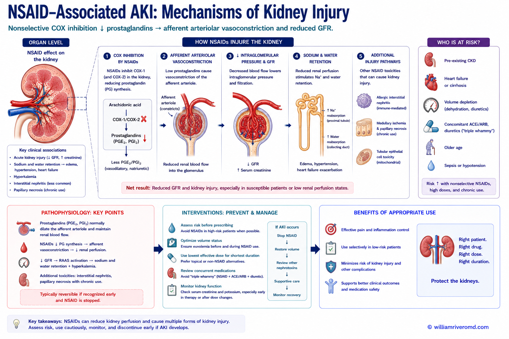
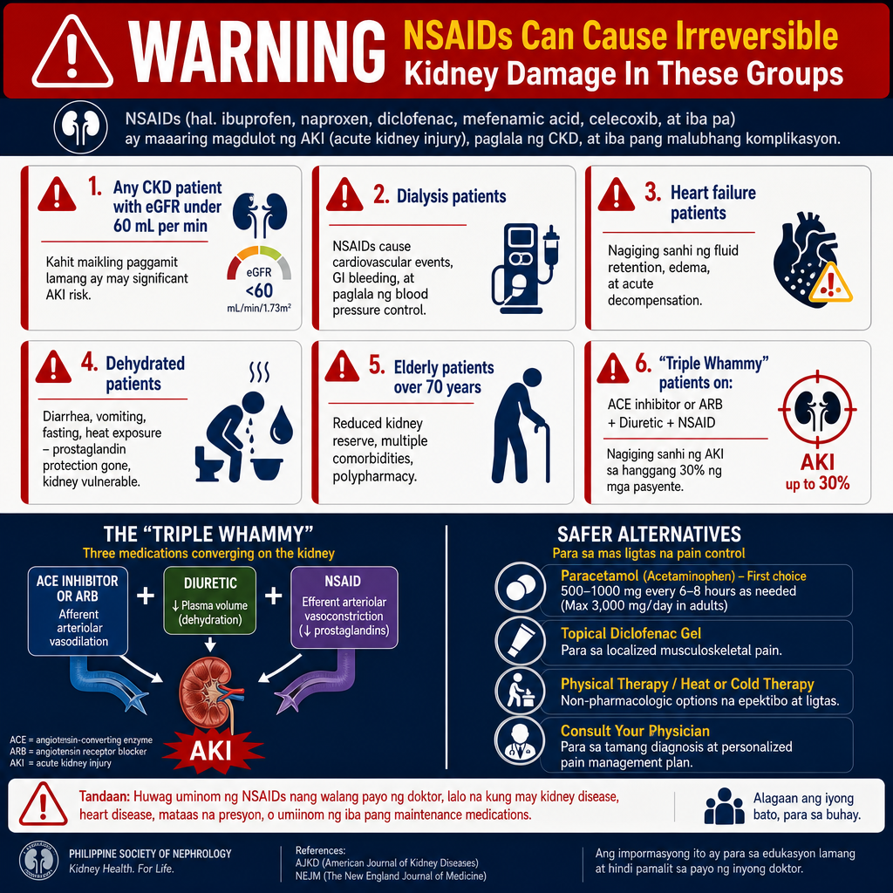
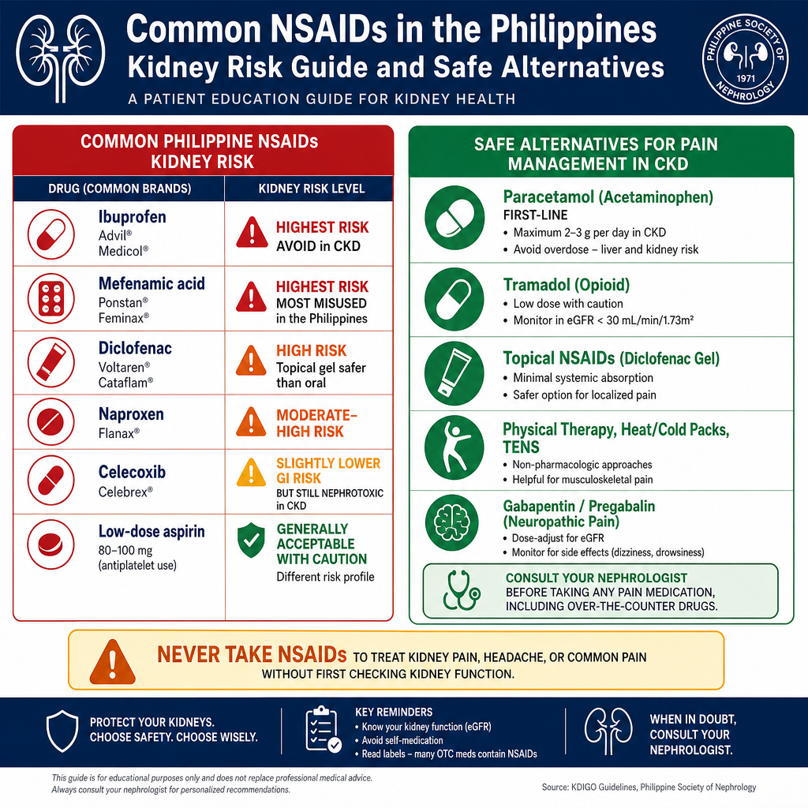

NSAIDs — Effective Pain Relief with a Hidden Kidney CostNSAIDs — Epektibong Pampawi ng Sakit na may Nakatagong Gastos sa BatoNSAIDs — Epektibo nga Pampawi sa Sakit nga adunay Tinago nga Bayad sa KidneyNSAIDs — Epektibong Pampawi ning Sakit na may Nakatagong Gastos sa Batu
Non-steroidal anti-inflammatory drugs (NSAIDs) are some of the most commonly purchased over-the-counter medicines in the Philippines. They are effective for pain, fever, and inflammation — but they work by blocking prostaglandins, compounds that also maintain kidney blood flow and protect the kidney tubules. In vulnerable patients, a single dose can trigger acute kidney injury.Ang mga non-steroidal anti-inflammatory drugs (NSAIDs) ay ilan sa pinakakaraniwang binibiling over-the-counter na gamot sa Pilipinas. Sila ay epektibo para sa sakit, lagnat, at pamamaga — ngunit gumagana sila sa pamamagitan ng pagharang sa mga prostaglandin, mga compound na nagtataglay rin ng pagpapanatili ng daloy ng dugo sa bato at pag-protekta sa mga tubule ng bato. Sa mga mahihinang pasyente, ang isang dosis ay maaaring mag-trigger ng acute kidney injury.Ang mga non-steroidal anti-inflammatory drugs (NSAIDs) pipila sa labing kasagarang gipalit nga over-the-counter nga tambal sa Pilipinas. Epektibo sila alang sa sakit, hilanat, ug pamamaga — apan naglihok sila pinaagi sa pagbabag sa mga prostaglandin, mga compound nga nagpabilin usab sa pagmentinar sa daloy sa dugo sa kidney ug pag-protekta sa mga tubule sa kidney. Sa mga mahuyang nga pasyente, ang usa ka dosis pwede mag-trigger sa acute kidney injury.Deng non-steroidal anti-inflammatory drugs (NSAIDs) ya ilan sa pinakakaraniwang binibiling over-the-counter na gamut king Pilipinas. Sila ya epektibo para king sakit, lagnat, at pamamaga — ngarud gumagana sila sa pamamagitan ning pagharang sa deng prostaglandin, deng compound na nagtataglay rin ning pagpapanatili ning daloy nining daya sa batu at pag-protekta sa deng tubule nining batu. Sa deng mahihinang pasyente, ing metung a dosis ya maaaring mag-trigger ning acute kidney injury.
Prostaglandins act as a protective buffer for kidney blood flow — especially when the kidney is already under stress from CKD, dehydration, or heart failure. NSAIDs remove this buffer, exposing the kidney to unchecked vasoconstriction.Ang mga prostaglandin ay kumikilos bilang protektibong buffer para sa daloy ng dugo sa bato — lalo na kapag ang bato ay nasa ilalim na ng stress mula sa CKD, dehydration, o pagpalya ng puso. Ang mga NSAID ay nag-aalis ng buffer na ito, na inilalantad ang bato sa walang kontrol na vasoconstriction.Ang mga prostaglandin naglihok isip protektibong buffer alang sa daloy sa dugo sa kidney — labi na kon ang kidney naa na sa ilalim sa stress gikan sa CKD, dehydration, o pagpalya sa puso. Ang mga NSAID nagtangtang niining buffer, nagpahayag sa kidney sa wala kontrola nga vasoconstriction.Deng prostaglandin ya kumikilos bilang protektibong buffer para king daloy nining daya sa batu — lalo na nung ining batu ya nasa ilalim na ning stress mula sa CKD, dehydration, o pagpalya nining pusu. Deng NSAID ya nag-aalis ning buffer na ini, na inilalantad ining batu sa alang kontrol na vasoconstriction.

A chart showing the four main ways that pain relievers (NSAIDs) can harm the kidneys, from sudden injury within days to slow damage that builds up over years.
Four Ways NSAIDs Damage the KidneyApat na Paraan na Sinisira ng NSAIDs ang BatoUpat nga Paagi nga Ginadaot sa NSAIDs ang KidneyApat na Paraan na Sinisira ning NSAIDs ing Batu
1. Acute kidney injury (hemodynamic)1. Acute kidney injury (hemodynamic)1. Acute kidney injury (hemodynamic)1. Acute kidney injury (hemodynamic)
The most common form. Occurs within hours to days of NSAID use. Creatinine rises sharply; urine output may fall. Caused by prostaglandin blockade → afferent vasoconstriction → ↓ GFR. Reversible if NSAID is stopped early and hydration is restored. Can become irreversible if use continues or if severely dehydrated.Ang pinakakaraniwang anyo. Nangyayari sa loob ng ilang oras hanggang ilang araw ng paggamit ng NSAID. Ang creatinine ay mabilis na tumataas; ang output ng ihi ay maaaring bumaba. Sanhi ng prostaglandin blockade → afferent vasoconstriction → ↓ GFR. Mababawi kung ihinto ang NSAID nang maaga at maibalik ang hydration. Maaaring maging hindi na mababawi kung patuloy ang paggamit o kung lubha ang dehydration.Ang labing kasagarang porma. Mahitabo sulod sa mga oras hangtod mga adlaw sa paggamit sa NSAID. Ang creatinine moapas pag-ayo; ang output sa ihi pwede mohulog. Hinungdan sa prostaglandin blockade → afferent vasoconstriction → ↓ GFR. Mabawi kon ihunong ang NSAID sa sayo ug maibalik ang hydration. Pwede mahimong dili na mabawi kon magpadayon ang paggamit o kon grabe ang dehydration.Ing pinakakaraniwang anyo. Nangyayari sa loob ning ilang oras anggang ilaning aldo ning paggamit ning NSAID. Ing creatinine ya mabilis na tumataas; ing output ning ihi ya maaaring bumaba. Sanhi ning prostaglandin blockade → afferent vasoconstriction → ↓ GFR. Mababawi nung ihinto ing NSAID nang maaga at maibalik ing hydration. Maaaring maging ali na mababawi nung patuloy ing paggamit o nung lubha ing dehydration.
2. Acute interstitial nephritis (AIN)2. Acute interstitial nephritis (AIN)2. Acute interstitial nephritis (AIN)2. Acute interstitial nephritis (AIN)
An immune reaction to the NSAID — can occur at any time during use, even after months of safe use. White blood cells infiltrate the kidney interstitium. Presents with rash, fever, eosinophilia, and rising creatinine. Unlike hemodynamic AKI, AIN may require corticosteroid treatment. Can progress to chronic interstitial nephritis with prolonged NSAID use.Isang immune reaction sa NSAID — maaaring mangyari sa anumang oras sa panahon ng paggamit, kahit pagkatapos ng ilang buwan ng ligtas na paggamit. Ang mga puting selula ng dugo ay pumapasok sa kidney interstitium. Nagpapakita ng pantal, lagnat, eosinophilia, at pagtaas ng creatinine. Hindi tulad ng hemodynamic AKI, ang AIN ay maaaring mangailangan ng corticosteroid treatment. Maaaring lumala sa chronic interstitial nephritis sa matagalang paggamit ng NSAID.Usa ka immune reaction sa NSAID — pwede mahitabo bisan kanus-a panahon sa paggamit, bisan human sa mga buwan nga luwas nga paggamit. Ang puti nga mga selula sa dugo nagsulod sa kidney interstitium. Nagpakita sa rash, hilanat, eosinophilia, ug pagtaas sa creatinine. Dili sama sa hemodynamic AKI, ang AIN pwede mangailangan sa corticosteroid treatment. Pwede molambo sa chronic interstitial nephritis sa dugay nga paggamit sa NSAID.Isang immune reaction sa NSAID — maaaring mangyari sa anumang oras sa panahon ning paggamit, kahit kapabanuan ning ilaning bulan ning ligtas na paggamit. Deng puting selula nining daya ya pumapasok sa kidney interstitium. Nagpapakita ning pantal, lagnat, eosinophilia, at pagtaas ning creatinine. Ali tulad ning hemodynamic AKI, ing AIN ya maaaring mangailangan ning corticosteroid treatment. Maaaring lumala sa chronic interstitial nephritis sa matagalang paggamit ning NSAID.
3. Chronic analgesic nephropathy3. Chronic analgesic nephropathy3. Chronic analgesic nephropathy3. Chronic analgesic nephropathy
The result of years of regular NSAID use — particularly combinations of analgesics (e.g., paracetamol + ibuprofen + caffeine). Progressive papillary necrosis (death of the medullary tissue), cortical scarring, and tubular atrophy. Often associated with phenacetin use (now banned in most countries) but still seen with chronic ibuprofen and mefenamic acid use.Ang resulta ng maraming taon ng regular na paggamit ng NSAID — lalo na ang mga kombinasyon ng analgesic (hal., paracetamol + ibuprofen + caffeine). Progresibong papillary necrosis (kamatayan ng medullary tissue), cortical scarring, at tubular atrophy. Madalas na kaugnay ng paggamit ng phenacetin (ngayon ay ipinagbawal sa karamihang bansa) ngunit nakikita pa rin sa matagalang paggamit ng ibuprofen at mefenamic acid.Ang resulta sa mga tuig nga regular nga paggamit sa NSAID — labi na ang mga kombinasyon sa analgesic (hal., paracetamol + ibuprofen + caffeine). Progresibo nga papillary necrosis (kamatayon sa medullary tissue), cortical scarring, ug tubular atrophy. Kasagaran nalambigit sa paggamit sa phenacetin (karon gidili sa kadaghanan nga mga nasud) apan makita pa sa dugay nga paggamit sa ibuprofen ug mefenamic acid.Ing resulta ning maramining banua ning regular na paggamit ning NSAID — lalo na deng kombinasyon ning analgesic (hal., paracetamol + ibuprofen + caffeine). Progresibong papillary necrosis (kamatayan ning medullary tissue), cortical scarring, at tubular atrophy. Madalas na kaugnay ning paggamit ning phenacetin (ngayon ya ipinagbawal sa karamihang bansa) ngarud nakikita pa rin sa matagalang paggamit ning ibuprofen at mefenamic acid.
4. Sodium and fluid retention4. Pagtitipon ng sodium at tubig4. Pag-atipon sa sodium ug tubig4. Pagtitipon ning sodium at danum
NSAIDs block prostaglandin-mediated sodium and water excretion — causing fluid retention, edema, and worsening hypertension. This directly antagonizes the effect of antihypertensive medications — particularly ACE inhibitors, ARBs, and diuretics. Can precipitate acute decompensation in heart failure or CKD patients on diuretics.Ang NSAIDs ay humahawa sa prostaglandin-mediated na pag-excrete ng sodium at tubig — nagdudulot ng pagtitipon ng tubig, edema, at pagpapalala ng hypertension. Direktang kinukontra nito ang epekto ng mga antihypertensive na gamot — lalo na ang mga ACE inhibitor, ARB, at diuretic. Maaaring mag-trigger ng acute decompensation sa mga pasyenteng may heart failure o CKD na nasa diuretic.Ang NSAIDs nagbabag sa prostaglandin-mediated nga pag-excrete sa sodium ug tubig — nagdaot sa pag-atipon sa tubig, edema, ug pagpagrabe sa hypertension. Direkta niining gikukontra ang epekto sa mga antihypertensive nga tambal — labi na ang mga ACE inhibitor, ARB, ug diuretic. Pwede mag-trigger sa acute decompensation sa mga pasyente nga adunay heart failure o CKD nga naa sa diuretic.Ing NSAIDs ya humahawa sa prostaglandin-mediated na pag-excrete ning sodium at danum — nagdudulot ning pagtitipon nining danum, edema, at pagpapalala ning hypertension. Direktang kinukontra nini ing epekto ning deng antihypertensive na gamut — lalo na deng ACE inhibinir, ARB, at diuretic. Maaaring mag-trigger ning acute decompensation sa deng pasyenteng may heart failure o CKD na nasa diuretic.

A guide to the people most at risk from NSAID pain relievers — including those with kidney disease, the elderly, diabetics, people with heart failure or dehydration, and those taking certain drug combinations.
Who Should Never Use NSAIDs Without Medical SupervisionSino ang Hindi Dapat Gumamit ng NSAIDs Nang Walang Medikal na PangangasiwaKinsa ang Dili Kinahanglan Mogamit sa NSAIDs Kon Wala Medikal nga PagbantaySino ing Ali Dapat Gumamit ning NSAIDs Nang Alang Medikal na Pangangasiwa
NSAIDs are contraindicated (should be avoided) in:Ang mga NSAID ay kontraindikado (dapat iwasan) sa:Ang mga NSAID kontraindikado (kinahanglan likayon) sa:Deng NSAID ya kontraindikado (dapat iwasan) sa:
- Any CKD patient with eGFR <60 mL/minAnumang pasyenteng may CKD na may eGFR <60 mL/minBisan unsang pasyente nga adunay CKD nga adunay eGFR <60 mL/minAnumang pasyenteng may CKD na may eGFR <60 mL/min — even short-course use carries significant AKI riskkahit ang maikling paggamit ay may malaking panganib ng AKIbisan ang mubo nga paggamit adunay dakong risk sa AKIkahit ing maikling paggamit ya may malda a panganib ning AKI
- Dialysis patientsMga pasyenteng nasa dialysisMga pasyente sa dialysisDeng pasyenteng nasa dialysis — NSAID use causes cardiovascular events, GI bleeding, and worsens blood pressure controlang paggamit ng NSAID ay nagdudulot ng cardiovascular events, GI bleeding, at nagpapalala ng kontrol ng presyon ng dugoang paggamit sa NSAID nagdaot sa cardiovascular events, GI bleeding, ug nagpagrabe sa kontrol sa presyon sa dugoang paggamit ning NSAID ya nagdudulot ning cardiovascular events, GI bleeding, at nagpapalala ning kontrol nining presyon nining daya
- Patients with heart failureMga pasyenteng may heart failureMga pasyente nga adunay heart failureDeng pasyenteng may heart failure — precipitates fluid retention and acute decompensationnagdudulot ng pagtitipon ng tubig at acute decompensationnagdaot sa pag-atipon sa tubig ug acute decompensationnagdudulot ning pagtitipon nining danum at acute decompensation
- Dehydrated patientsMga pasyenteng may dehydrationMga pasyente nga adunay dehydrationDeng pasyenteng may dehydration — diarrhea, vomiting, fasting, or heat exposure remove the prostaglandin-buffered kidney protectionang pagtatae, pagsusuka, pag-aayuno, o pagkakalantad sa init ay nag-aalis ng proteksyon ng bato na buffered ng prostaglandinang pagtatae, pagsuka, pag-ayuno, o pagkaladlad sa init nagtangtang sa proteksyon sa kidney nga gi-buffer sa prostaglandinang pagtatae, pagsusuka, pag-aayuno, o pagkakalantad sa init ya nag-aalis ning proteksyon nining batu na buffered ning prostaglandin
- Elderly patients (>70 years)Mga matatandang pasyente (>70 taon)Mga tigulang nga pasyente (>70 tuig)Deng matatandang pasyente (>70 banua) — reduced baseline kidney reserve, multiple comorbiditiesnabawasang baseline kidney reserve, maraming comorbiditynabawasan nga baseline kidney reserve, daghang comorbiditynabawasang baseline kidney reserve, dacal a comorbidity
- Patients on ACE inhibitors + diuretics simultaneouslyMga pasyenteng sabay-sabay na gumagamit ng ACE inhibitor + diureticMga pasyente nga dungan nga naggamit sa ACE inhibitor + diureticDeng pasyenteng sabay-sabay na gumagamit ning ACE inhibinir + diuretic — "triple whammy" combination (ACE/ARB + diuretic + NSAID) causes AKI in up to 30% of patientsang kombinasyong "triple whammy" (ACE/ARB + diuretic + NSAID) ay nagdudulot ng AKI sa hanggang 30% ng mga pasyenteang kombinasyon nga "triple whammy" (ACE/ARB + diuretic + NSAID) nagdaot sa AKI sa hangtod 30% sa mga pasyenteang kombinasyong "triple whammy" (ACE/ARB + diuretic + NSAID) ya nagdudulot ning AKI sa anggang 30% ning deng pasyente
The "triple whammy" — ACE inhibitor/ARB + diuretic + NSAID — is one of the most dangerous drug combinations for kidneys. Each drug individually reduces kidney perfusion by a different mechanism; together they cause additive ischemic injury.Ang "triple whammy" — ACE inhibitor/ARB + diuretic + NSAID — ay isa sa mga pinaka-mapanganib na kombinasyon ng gamot para sa mga bato. Ang bawat gamot ay indibidwal na nagbabawas ng perfusion ng bato sa pamamagitan ng ibang mekanismo; magkasama ay nagdudulot sila ng karagdagang ischemic na pinsala.Ang "triple whammy" — ACE inhibitor/ARB + diuretic + NSAID — usa sa labing mapanganib nga mga kombinasyon sa tambal alang sa mga kidney. Ang matag tambal indibidwal nga nagpababa sa perfusion sa kidney pinaagi sa lain-laing mekanismo; magkauban nagdaot sila sa additive nga ischemic nga kadaot.Ing "triple whammy" — ACE inhibinir/ARB + diuretic + NSAID — ya isa king deng pinaka-mapanganib na kombinasyon nining gamut para king dening batu. Ing bawat gamut ya indibidwal na nagbabawas ning perfusion nining batu sa pamamagitan ning ibang mekanismo; magkasama ya nagdudulot sila ning karagdagang ischemic na pinsala.

A reference showing common pain relievers sold in the Philippines — such as mefenamic acid, ibuprofen, diclofenac, naproxen, and celecoxib — and their kidney risk, with safer choices for people with kidney disease.
Common NSAIDs in the Philippines — Kidney Risk GuideMga Karaniwang NSAID sa Pilipinas — Gabay sa Panganib sa BatoMga Kasagarang NSAID sa Pilipinas — Giya sa Risk sa KidneyDeng Karaniwang NSAID king Pilipinas — Gabay sa Panganib sa Batu
Watch for hidden NSAIDs in combination productsBantayan ang mga nakatagong NSAID sa mga combination na produktoBantayan ang mga tinago nga NSAID sa mga combination nga produktoBantayan deng nakatagong NSAID sa deng combination na produkto
Many popular combination analgesics contain hidden NSAIDs. Alaxan (ibuprofen + paracetamol), Flanax Plus, Advil Dual Action, and many "extra strength" cold and flu preparations contain ibuprofen or other NSAIDs. Always read the ingredients of any pain or flu medication before taking it if you have CKD.Maraming sikat na combination analgesic ang naglalaman ng mga nakatagong NSAID. Ang Alaxan (ibuprofen + paracetamol), Flanax Plus, Advil Dual Action, at maraming "extra strength" na paghahanda para sa sipon at trangkaso ay naglalaman ng ibuprofen o ibang NSAID. Laging basahin ang mga sangkap ng anumang gamot para sa sakit o trangkaso bago inumin kung mayroon kayong CKD.Daghang sikat nga combination analgesic adunay mga tinago nga NSAID. Ang Alaxan (ibuprofen + paracetamol), Flanax Plus, Advil Dual Action, ug daghang "extra strength" nga paghanda alang sa sipon ug trangkaso adunay ibuprofen o ubang NSAID. Kanunay basaha ang mga sangkap sa bisan unsang tambal alang sa sakit o trangkaso sa dili pa kini inomon kon adunay CKD kamo.Maraming sikat na combination analgesic ing naglalaman ning deng nakatagong NSAID. Ing Alaxan (ibuprofen + paracetamol), Flanax Plus, Advil Dual Action, at dacal a "extra strength" na paghahanda para king sipon at trangkaso ya naglalaman ning ibuprofen o ibang NSAID. Pirming basahin deng sangkap ning anumaning gamut para king sakit o trangkaso bago inumin nung mayroon kayung CKD.
Symptoms of NSAID-Induced Kidney InjuryMga Sintoma ng Pinsala sa Bato Dulot ng NSAIDMga Sintoma sa Kadaot sa Kidney Dulot sa NSAIDDeng Sintoma ning Pinsala sa Batu Dulot ning NSAID
Acute injury — symptoms within daysAcute na pinsala — mga sintoma sa loob ng ilang arawAcute nga kadaot — mga sintoma sulod sa pipila ka adlawAcute na pinsala — deng sintoma sa loob ning ilaning aldo
Decreased urine output · Ankle and leg swelling (new or worsening) · Shortness of breath from fluid overload · Elevated blood pressure despite medications · Rapid weight gain from fluid retention · Nausea and loss of appetite · Fatigue and weakness. In severe cases: confusion, severe breathlessness — emergency.Pagbaba ng output ng ihi · Pamamaga ng bukung-bukong at binti (bago o lumalala) · Pangangapos ng hininga mula sa fluid overload · Mataas na presyon ng dugo kahit nasa gamot · Mabilis na pagtaas ng timbang mula sa pagtitipon ng tubig · Pagduduwal at kawalan ng gana · Pagod at kahinaan. Sa matinding kaso: kalituhan, matinding pangangapos ng hininga — emergency.Pagkunhod sa output sa ihi · Pamamaga sa bukobuko ug bitiis (bag-o o nagpagrabe) · Kulang ang ginhawa gikan sa fluid overload · Taas nga presyon sa dugo bisan sa mga tambal · Kusog nga pagtaas sa timbang gikan sa pag-atipon sa tubig · Pagkahilo ug kawala sa gana · Kakapoy ug kahuyang. Sa grabe nga kaso: kalibog, grabe nga kulang ang ginhawa — emergency.Pagbaba ning output ning ihi · Pamamaga ning bunung-bukong at binti (bago o lumalala) · Pangangapos ning hininga mula sa fluid overload · Mataas na presyon nining daya kahit nasa gamut · Mabilis na pagtaas ning timbang mula sa pagtitipon nining danum · Pagduduwal at kaalan ning gana · Pagod at kahinaan. Sa matinding kaso: kalituhan, matinding pangangapos ning hininga — emergency.
Interstitial nephritis — may appear laterInterstitial nephritis — maaaring lumabas sa ibang pagkakataonInterstitial nephritis — pwede moabut sa ulahiInterstitial nephritis — maaaring lumabas sa ibang pagkakabanua
Skin rash · Fever · Flank or back pain · Decreased urine output · Blood or protein in urine · Eosinophilia on blood count · Rising creatinine after weeks of NSAID use. AIN can occur even after long periods of apparently safe NSAID use — the immune reaction is unpredictable in timing.Pantal sa balat · Lagnat · Sakit sa gilid o likod · Pagbaba ng output ng ihi · Dugo o protina sa ihi · Eosinophilia sa blood count · Pagtaas ng creatinine pagkatapos ng mga linggo ng paggamit ng NSAID. Ang AIN ay maaaring mangyari kahit pagkatapos ng matagal na panahon ng tila ligtas na paggamit ng NSAID — ang immune reaction ay hindi mahuhulaan sa oras.Pantal sa panit · Hilanat · Sakit sa kilid o likod · Pagkunhod sa output sa ihi · Dugo o protina sa ihi · Eosinophilia sa blood count · Pagtaas sa creatinine human sa mga semana sa paggamit sa NSAID. Ang AIN pwede mahitabo bisan human sa dugay nga panahon sa daw luwas nga paggamit sa NSAID — ang immune reaction dili matagna sa oras.Pantal sa balat · Lagnat · Sakit sa gilid o likod · Pagbaba ning output ning ihi · Daya o protina sa ihi · Eosinophilia sa blood count · Pagtaas ning creatinine kapabanuan ning dening lutu ning paggamit ning NSAID. Ing AIN ya maaaring mangyari kahit kapabanuan ning matagal na panahon ning tila ligtas na paggamit ning NSAID — ing immune reaction ya ali mahuhulaan sa oras.
If you have CKD and have recently taken an NSAID — check your creatinineKung mayroon kayong CKD at kamakailan ay uminom ng NSAID — ipasuri ang inyong creatinineKon adunay CKD kamo ug bag-o lang miinom ug NSAID — ipasulay ang inyong creatinineNung mayroon kayung CKD at kamakailan ya uminom ning NSAID — ipasuri ing inyong creatinine
Do not wait for symptoms. NSAID-induced AKI is often completely silent until creatinine is already dangerously elevated. If you have taken an NSAID (including OTC products) in the past week and have CKD, diabetes, or hypertension — have your creatinine and eGFR checked. Catching AKI early allows reversal; missing it allows permanent damage.Huwag maghintay ng mga sintoma. Ang NSAID-induced AKI ay madalas na ganap na walang sintoma hanggang ang creatinine ay mapanganib nang mataas. Kung kumuha kayo ng NSAID (kasama ang mga OTC na produkto) sa nakaraang linggo at may CKD, diyabetes, o hypertension kayo — ipasuri ang inyong creatinine at eGFR. Ang maagang pagtuklas ng AKI ay nagpapahintulot ng pagbabawi; ang pagkawala nito ay nagpapahintulot ng permanenteng pinsala.Ayaw maghulat sa mga sintoma. Ang NSAID-induced AKI kasagaran hingpit nga walay sintoma hangtod ang creatinine mapanganib na taas. Kon minum kamo ug NSAID (lakip ang mga OTC nga produkto) sa miaging semana ug adunay CKD, diyabetes, o hypertension kamo — ipasulay ang inyong creatinine ug eGFR. Ang sayo nga pagkuha sa AKI naghatag og kahigayonan sa pagbawi; ang pagkawala niini naghatag og permanenteng kadaot.Eka maghintay ning deng sintoma. Ing NSAID-induced AKI ya madalas na ganap na alang sintoma anggang ing creatinine ya mapanganib nang mataas. Nung kumuha kayu ning NSAID (kasama deng OTC na produkto) sa nakaraaning lutu at may CKD, diyabetes, o hypertension kayu — ipasuri ing inyong creatinine at eGFR. Ing maagang pagtuklas ning AKI ya nagpapahintulot ning pagbabawi; ing pagkaala nini ya nagpapahintulot ning permanenteng pinsala.
What to Use Instead of NSAIDsAno ang Gagamitin sa Halip ng NSAIDsUnsa ang Gamiton Imbes sa NSAIDsAno ing Gagamitin sa Halip ning NSAIDs
✓ Paracetamol (Acetaminophen) — First Choice for Pain and Fever✓ Paracetamol (Acetaminophen) — Unang Pagpipilian para sa Sakit at Lagnat✓ Paracetamol (Acetaminophen) — Unang Pagpili alang sa Sakit ug Hilanat✓ Paracetamol (Acetaminophen) — Unang Pagpipilian para king Sakit at Lagnat
Paracetamol does not block prostaglandins and has no direct kidney vasoconstriction effect. It is the safest analgesic for CKD patients. Maximum dose in CKD: 500–650 mg every 6–8 hours (not to exceed 2 g/day in advanced CKD or with liver disease). Paracetamol overdose causes liver damage, not kidney damage — do not exceed recommended doses. Biogesic, Tempra, Tylenol are all paracetamol.Ang paracetamol ay hindi humahadlang sa mga prostaglandin at walang direktang epekto ng kidney vasoconstriction. Ito ang pinakaligtas na analgesic para sa mga pasyenteng may CKD. Pinakamataas na dosis sa CKD: 500–650 mg bawat 6–8 oras (hindi lalampas sa 2 g/araw sa advanced CKD o may sakit sa atay). Ang overdose ng paracetamol ay nagdudulot ng pinsala sa atay, hindi sa bato — huwag lumagpas sa inirerekomendang dosis. Ang Biogesic, Tempra, Tylenol ay paracetamol lahat.Ang paracetamol wala nagbabag sa mga prostaglandin ug walay direkta nga epekto sa kidney vasoconstriction. Kini ang labing luwas nga analgesic alang sa mga pasyente nga adunay CKD. Pinaka-taas nga dosis sa CKD: 500–650 mg matag 6–8 ka oras (dili molapas sa 2 g/adlaw sa advanced CKD o adunay sakit sa atay). Ang overdose sa paracetamol nagdaot sa atay, dili sa kidney — ayaw lapasa ang girekomendar nga dosis. Ang Biogesic, Tempra, Tylenol paracetamol silang tanan.Ing paracetamol ya ali humahadlang sa deng prostaglandin at alang direktang epekto nining kidney vasoconstriction. Ini ing pinakaligtas na analgesic para king deng pasyenteng may CKD. Pinakamatas a dosis sa CKD: 500–650 mg bawat 6–8 oras (ali lalampas sa 2 g/aldo sa advanced CKD o may sakit sa atay). Ing overdose ning paracetamol ya nagdudulot ning pinsala sa atay, ali sa batu — eka lumagpas sa inirerekomendang dosis. Ing Biogesic, Tempra, Tylenol ya paracetamol lahat.
✓ Topical Diclofenac Gel — For Joint and Muscle Pain✓ Topical Diclofenac Gel — Para sa Sakit ng Kasukasuan at Kalamnan✓ Topical Diclofenac Gel — Alang sa Sakit sa Kasukasuan ug Kaunoran✓ Topical Diclofenac Gel — Para king Sakit ning Kasukasuan at Kalamnan
Diclofenac applied topically to a specific joint or muscle achieves local anti-inflammatory effect with minimal systemic absorption — significantly lower kidney risk than oral NSAIDs. Voltaren Emulgel is widely available. Appropriate for localized joint pain, muscle strains, and arthritis of accessible joints. Not suitable for widespread pain.Ang diclofenac na inilapat nang topical sa isang tiyak na kasukasuan o kalamnan ay nagkakamit ng lokal na anti-inflammatory na epekto na may minimal na sistematikong pagsipsip — makabuluhang mas mababang panganib sa bato kaysa oral NSAIDs. Ang Voltaren Emulgel ay malawak na available. Angkop para sa naka-lokalize na sakit ng kasukasuan, pag-unat ng kalamnan, at arthritis ng mga accessible na kasukasuan. Hindi angkop para sa malawak na sakit.Ang diclofenac nga gibutang topically sa espesipiko nga kasukasuan o kaunoran nakab-ot ang lokal nga anti-inflammatory nga epekto nga adunay minimal nga sistematiko nga pagsuyop — grabe ka ubos nga risk sa kidney kay sa oral NSAIDs. Ang Voltaren Emulgel kaylap nga available. Angay alang sa naka-lokalize nga sakit sa kasukasuan, pag-unat sa kaunoran, ug arthritis sa mga accessible nga kasukasuan. Dili angay alang sa kaylap nga sakit.Ing diclofenac na inilapat nang topical sa metung a tiyak na kasukasuan o kalamnan ya nagkakamit ning lokal na anti-inflammatory na epekto na may minimal na sistematikong pagsipsip — makabuluhang mas mababang panganib sa batu kaysa oral NSAIDs. Ing Voltaren Emulgel ya malawak na available. Angkop para king naka-lokalize na sakit ning kasukasuan, pag-unat ning kalamnan, at arthritis ning deng accessible na kasukasuan. Ali angkop para king malawak na sakit.
✓ Tramadol — For Moderate to Severe Pain (With Precautions)✓ Tramadol — Para sa Katamtaman hanggang Matinding Sakit (Na may mga Pag-iingat)✓ Tramadol — Alang sa Kasarangan hangtod Grabe nga Sakit (Nga adunay mga Pag-amping)✓ Tramadol — Para king Katamtaman anggang Matinding Sakit (Na may deng Pag-iingat)
Tramadol is an opioid analgesic that does not affect prostaglandins and has no kidney vasoconstriction effect. It requires a prescription and must be dose-adjusted in CKD (accumulation risk). For severe pain where NSAIDs would be the only alternative, tramadol is kidney-safer — but requires physician supervision.Ang tramadol ay isang opioid analgesic na hindi nakakaapekto sa mga prostaglandin at walang epekto ng kidney vasoconstriction. Nangangailangan ito ng reseta at dapat ayusin ang dosis sa CKD (panganib ng pag-iipon). Para sa matinding sakit kung saan ang mga NSAID ang magiging tanging alternatibo, ang tramadol ay mas ligtas sa bato — ngunit nangangailangan ng pangangasiwa ng doktor.Ang tramadol usa ka opioid analgesic nga wala nakaapekto sa mga prostaglandin ug walay epekto sa kidney vasoconstriction. Nanginahanglan kini ug reseta ug kinahanglan i-adjust ang dosis sa CKD (risk sa pag-atipon). Alang sa grabe nga sakit diin ang NSAIDs mao unta ang bugtong alternatibo, ang tramadol mas luwas sa kidney — apan nanginahanglan sa pagbantay sa doktor.Ing tramadol ya metung a opioid analgesic na ali nakakaapekto sa deng prostaglandin at alang epekto nining kidney vasoconstriction. Nangangailangan ini ning reseta at dapat ayusin ing dosis sa CKD (panganib ning pag-iipon). Para king matindining sakit nung saan deng NSAID ing magiging tanging alternatibo, ing tramadol ya mas ligtas sa batu — ngarud nangangailangan ning pangangasiwa ning doktor.
✓ Non-Pharmacological Pain Management✓ Hindi Parmasyutikong Pamamahala ng Sakit✓ Dili Parmasyutikong Pagdumala sa Sakit✓ Ali Parmasyutikong Pamamahala ning Sakit
Heat therapy (warm compress, heated pad) for muscle pain and dysmenorrhea. Cold therapy for acute injury and joint inflammation. Physical therapy and exercises for chronic joint and back pain. TENS (transcutaneous electrical nerve stimulation). Massage therapy. These approaches have zero kidney risk and are underutilized alternatives to chronic NSAID use.Heat therapy (mainit na compress, heated pad) para sa sakit ng kalamnan at dysmenorrhea. Cold therapy para sa acute na pinsala at pamamaga ng kasukasuan. Physical therapy at mga ehersisyo para sa matagalang sakit ng kasukasuan at likod. TENS (transcutaneous electrical nerve stimulation). Massage therapy. Ang mga pamamaraang ito ay walang panganib sa bato at mga hindi gaanong ginagamit na alternatibo sa matagalang paggamit ng NSAID.Heat therapy (mainit nga compress, heated pad) alang sa sakit sa kaunoran ug dysmenorrhea. Cold therapy alang sa acute nga kadaot ug pamamaga sa kasukasuan. Physical therapy ug mga ehersisyo alang sa dugay nga sakit sa kasukasuan ug likod. TENS (transcutaneous electrical nerve stimulation). Massage therapy. Kining mga pamaagi walay risk sa kidney ug mga dili gaanong gigamit nga alternatibo sa dugay nga paggamit sa NSAID.Heat therapy (mainit na compress, heated pad) para king sakit ning kalamnan at dysmenorrhea. Cold therapy para king acute na pinsala at pamamaga ning kasukasuan. Physical therapy at deng ehersisyo para king matagalaning sakit ning kasukasuan at likod. TENS (transcutaneous electrical nerve stimulation). Massage therapy. Deng pamamaraang ini ya alang panganib sa batu at deng ali gaanong ginagamit na alternatibo sa matagalang paggamit ning NSAID.
The Non-Negotiable Rules About NSAIDs in CKDAng mga Hindi Mapag-usapang Patakaran Tungkol sa NSAIDs sa CKDAng mga Dili Mapagkasabutan nga Lagda Mahitungod sa NSAIDs sa CKDDeng Ali Mapag-usapang Patakaran Tungkol sa NSAIDs sa CKD
| CKD StageStage ng CKDStage sa CKDStage ning CKD | NSAID usePaggamit ng NSAIDPaggamit sa NSAIDPaggamit ning NSAID | If unavoidableKung hindi maiwasanKon dili malikayanNung ali maiwasan |
|---|---|---|
| Stage 1–2 (eGFR >60)Stage 1–2 (eGFR >60)Stage 1–2 (eGFR >60)Stage 1–2 (eGFR >60) | Use with caution — not chronically. Occasional short-course (1–3 days) lowest-dose ibuprofen or mefenamic acid may be acceptable with adequate hydrationGamitin nang may pag-iingat — hindi nang paulit-ulit. Ang paminsan-minsang maikling kurso (1–3 araw) ng pinakamababang dosis ng ibuprofen o mefenamic acid ay maaaring katanggap-tanggap na may sapat na hydrationGamiton nga may pag-amping — dili kanunay. Ang usahay mubo nga kurso (1–3 ka adlaw) sa pinaka-ubos nga dosis sa ibuprofen o mefenamic acid mahimong katanggap-tanggap nga adunay saktong hydrationGamitin nang may pag-iingat — ali nang paulit-ulit. Ing pamisan-misang maikling kurso (1–3 aldo) ning pinakamababang dosis ning ibuprofen o mefenamic acid ya maaaring katanggap-tanggap na may sapat na hydration | Ensure well hydrated. Avoid with diuretics or ACE/ARBs on same day. Check creatinine after.Tiyaking maayos ang hydration. Iwasan kasabay ng mga diuretic o ACE/ARB sa parehong araw. Suriin ang creatinine pagkatapos.Siguroha nga maayong hydrated. Likayi kauban ang mga diuretic o ACE/ARB sa mao rang adlaw. Suslayon ang creatinine human.Tiyaking maayos ing hydration. Iwasan kasabay ning deng diuretic o ACE/ARB sa parehoning aldo. Suriin ing creatinine kapabanuan. |
| Stage 3a (eGFR 45–59)Stage 3a (eGFR 45–59)Stage 3a (eGFR 45–59)Stage 3a (eGFR 45–59) | Avoid — use only under physician supervision with specific indication. Risk of AKI is significant even with short coursesIwasan — gamitin lamang sa ilalim ng pangangasiwa ng doktor na may tiyak na indikasyon. Ang panganib ng AKI ay makabuluhan kahit sa maikling kursoLikayi — gamiton lamang sa ilalim sa pagbantay sa doktor nga adunay espesipiko nga indikasyon. Ang risk sa AKI dakong kahulogan bisan sa mubo nga kursoIwasan — gamitin lamang sa ilalim ning pangangasiwa ning doktor na may tiyak na indikasyon. Ing panganib ning AKI ya makabuluhan kahit sa maikling kurso | Use lowest effective dose for shortest duration. Monitor creatinine 48–72 hours after.Gamitin ang pinakamababang epektibong dosis para sa pinakamaikling tagal. Bantayan ang creatinine 48–72 oras pagkatapos.Gamiton ang pinaka-ubos nga epektibong dosis sa pinaka-mubo nga panahon. Bantayan ang creatinine 48–72 ka oras human.Gamitin ing pinakamababang epektibong dosis para king pinakamaikling tagal. Bantayan ing creatinine 48–72 oras kapabanuan. |
| Stage 3b (eGFR 30–44)Stage 3b (eGFR 30–44)Stage 3b (eGFR 30–44)Stage 3b (eGFR 30–44) | Contraindicated — do not use without explicit nephrology approval. Paracetamol only for pain.Kontraindikado — huwag gamitin nang walang pahintulot ng nephrology. Paracetamol lamang para sa sakit.Kontraindikado — ayaw gamiton kon wala esplisite nga pag-aprubahan sa nephrology. Paracetamol lamang alang sa sakit.Kontraindikado — eka gamitin nang alang pahintulot ning nephrology. Paracetamol lamang para king sakit. | Hospital-supervised use only with IV hydration protocolHospital-supervised na paggamit lamang na may IV hydration protocolHospital-supervised nga paggamit lamang nga adunay IV hydration protocolHospital-supervised na paggamit lamang na may IV hydration protocol |
| Stage 4–5 / DialysisStage 4–5 / DialysisStage 4–5 / DialysisStage 4–5 / Dialysis | Absolutely contraindicated. No exceptions for self-medication. Paracetamol is the only safe OTC analgesic.Ganap na kontraindikado. Walang pagbubukod para sa self-medication. Ang paracetamol lamang ang ligtas na OTC analgesic.Hingpit nga kontraindikado. Walay eksepsyon alang sa self-medication. Ang paracetamol lamang ang luwas nga OTC analgesic.Ganap na kontraindikado. Alang pagbubukod para king self-medication. Ing paracetamol lamang ing ligtas na OTC analgesic. | Refer to nephrologist for pain management planI-refer sa nephrologist para sa plano ng pamamahala ng sakitI-refer sa nephrologist alang sa plano sa pagdumala sa sakitI-refer sa nephrologist para king plano ning pamamahala nining sakit |
What to say at any pharmacy or clinicAno ang sasabihin sa anumang parmasya o klinikaUnsa ang isulti sa bisan unsang parmasya o klinikaAno ing sasabihin sa anumang parmasya o klinika
"I have chronic kidney disease / I am on dialysis. I cannot take NSAIDs including ibuprofen, mefenamic acid, diclofenac, naproxen, or celecoxib. Please give me paracetamol only for pain and fever." Write this on a card and keep it with you. In emergencies, show it to any healthcare provider before accepting any pain medication."Mayroon akong chronic kidney disease / Nasa dialysis ako. Hindi ako makakainom ng mga NSAID kasama ang ibuprofen, mefenamic acid, diclofenac, naproxen, o celecoxib. Pakibigyan lamang ako ng paracetamol para sa sakit at lagnat." Isulat ito sa isang card at itago kasama ninyo. Sa mga emergency, ipakita ito sa sinumang healthcare provider bago tanggapin ang anumang gamot para sa sakit."Adunay akong chronic kidney disease / Naa ako sa dialysis. Dili ako makainom sa mga NSAID lakip ang ibuprofen, mefenamic acid, diclofenac, naproxen, o celecoxib. Palihug hatagi lang ako ug paracetamol alang sa sakit ug hilanat." Isulat kini sa usa ka card ug tipigan kauban ninyo. Sa mga emergency, ipakita kini sa bisan unsang healthcare provider sa dili pa modawat sa bisan unsang tambal alang sa sakit."Mayroon akong chronic kidney disease / Nasa dialysis ako. Ali ako makakainom ning deng NSAID kasama ing ibuprofen, mefenamic acid, diclofenac, naproxen, o celecoxib. Pakibigyan lamang ako ning paracetamol para king sakit at lagnat." Isulat ini sa metung a card at itago kasama ninyo. Sa deng emergency, ipakita ini sa sinumang healthcare provider bago tanggapin ing anumaning gamut para king sakit.